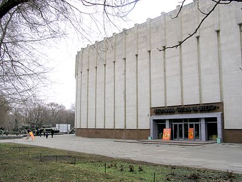

Исторический музей был основан еще в 1849 году как "Музеум древностей Екатеринославской губернии".
Становление и развитие музея тесно связано с именем академика Дмитрия Ивановича Яворницкого, который был директором музея более 30 лет с 1902 года.
Современное здание музея было построено в 1905 году.
В середине 1970-х гг. музей был реконструирован (построено помещение диорамы "Битва за Днепр", значительно расширены площади, и экспозиция).
Уникальные экспонаты:
• Скифские и половецкие «каменные бабы»
• Керносовский идол
• Статуэтка фараона Рамзеса V
• Казацкие древности
• Карета времен Екатерины II